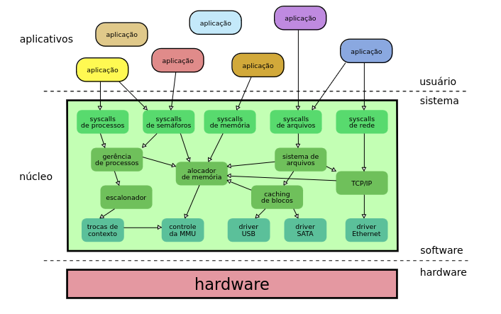
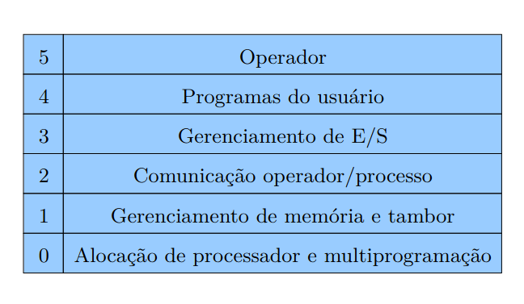
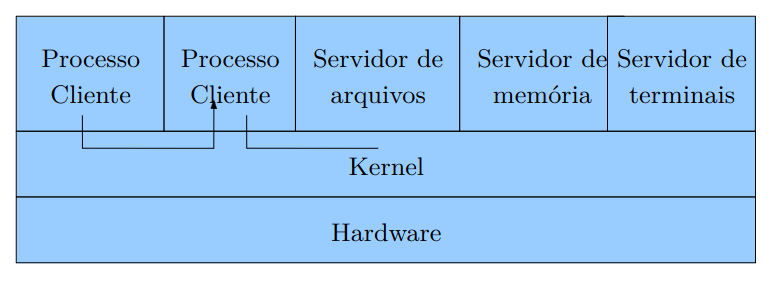

Estrutura de Kernel
Definição
É de acordo como a estrutura(núcleo) está organizado.
Sendo eles, Sistemas Monolíticos, Sistema em camadas, Máquinas Virtuais, Micro-kernel(cliente/servidor), Exo-kernel.
Sistema Monolíticos
- O sistema é um "bloco maciço" de código que opera em modo núcleo, com acesso a todos os recursos do hardware e sem restrições de acesso a memória.
Vantagens
- Desempenho: Qualquer componente pode acessar os demais componente diretamente, pois não há barreiras.
Desvantagens
-
Problema de Robustez: Como todos os componentes tem privilegio a todo o hardware, caso ocorra um erro, este erro pode se espalhar rapidamente por todo o sistema.
-
Escabilidade: Como todo o núcleo está unido, o sistema pode ser fortemente interdependentes, tornando a manuteção e a evolução mais complexa a cada adição de funcionalidades.

Sistema em camadas
- Uma forma mais elegante de estruturar um sistema operacional faz uso da noção de camadas: a camada mais baixa realiza a interface com o hardware, enquanto as camadas intermediárias proveem níveis de abstração e gerência cada vez mais sofisticados. Por fim, a camada superior define a interface do núcleo para as aplicações (as chamadas de sistema). As camadas têm níveis de privilégio decrescentes: a camada inferior tem acesso total ao hardware, enquanto a superior tem acesso bem mais restrito.
Desvantagens
Lento desempenho: Por causa de cada camada precisar se comunicar, acaba deixando lento a comunicação de por exemplo, entrada do teclado.
Divisão-não-clara: Como muitos recursos tinha co-relação, era dificil separar de maneira óbvia as camadas

Micro-kernel
-
Um micro-kernel visa remover todo código de alto nível do kernel, deixando somente o necessário para interagir com o hardware e criar algumas abstrações básicas. E o restante do código será transferido para programas separados no espaço usuário, denominado serviços.
-
Os processos interagem com SO através de troca de mensagens
Vantagens
Modularização: A abordagem micronúcleo oferece maior modularidade, pois cada serviço pode ser desenvolvido de forma independente dos demais; mais flexibilidade, pois os serviços podem ser carregados e desativados conforme a necessidade; e mais robustez, pois caso um serviço falhe, somente ele será afetado, devido ao confinamento de memória entre os serviços.
Desvantagens
Implementação: Algumas partes do sistema operacional é impossível implementar esse esquema -> carragar comandos nos registradores físicos.
Difícil implementação.

Exo-kernel
-
o núcleo do sistema apenas proporciona acesso controlado aos recursos do hardware, mas não implementa nenhuma abstração.
-
Separado em duas partes: < Exo-kernel -> núcleo minimalista que faz a multiplexação segura entre os recursos de hardware, protegendo-os. < LibOS -> conjunto de biblioteca que gerenciam recursos e oferecem abstrações de alto nível para as aplicações